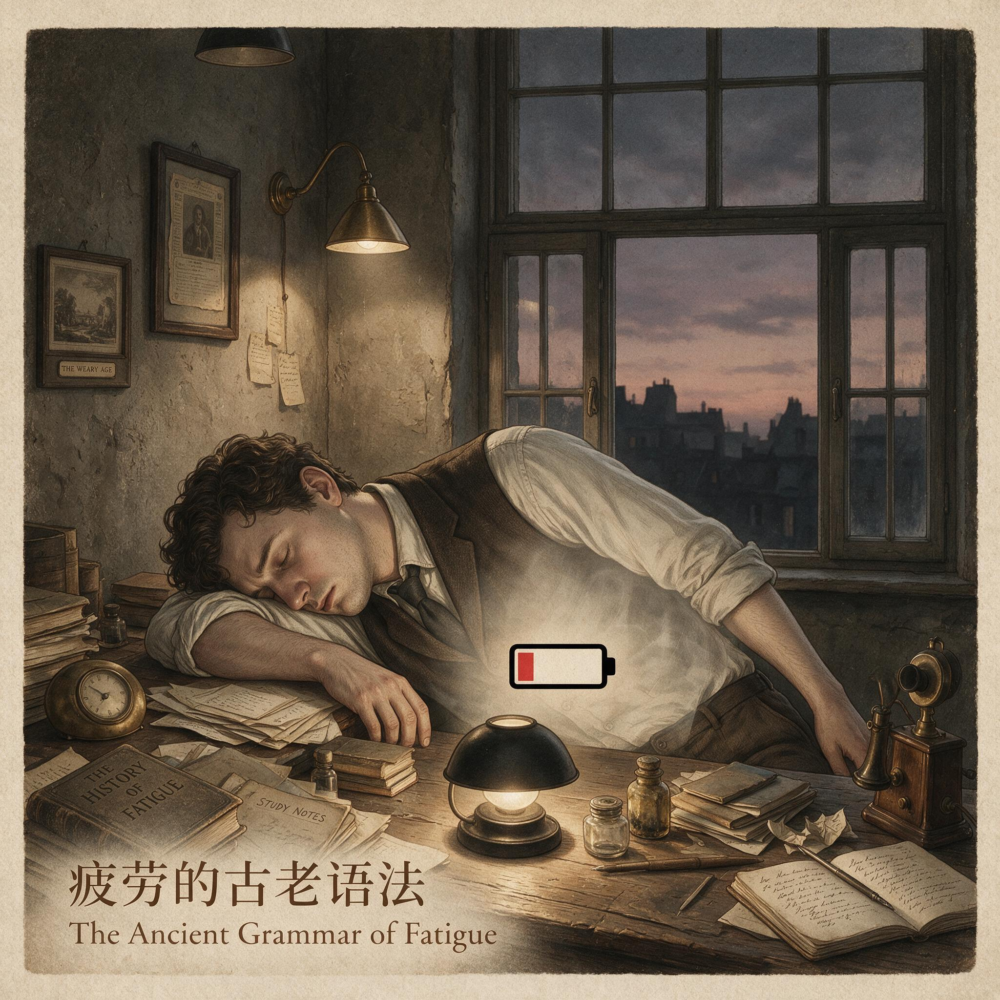

第 3 章
疲劳的古老语法
下午的办公室，一个人从椅子上直起身，手从鼠标上滑下来。他没有跑步，没有搬运，没有发热，也没有上一章那位发烧者裹着毛毯时那种明确的冷。窗外天色转暗，屏幕上未回复的邮件叠成一列。

现代办公室疲劳：人体能量耗尽的抽象表现
AI 生成插图，非史实影像。
一种沉倦从颈后升起，像有人把湿沙慢慢往他后脑勺里灌。他揉了揉眼睛，走去茶水间接了杯水，回来坐下。那种沉倦还在原处，一点也没有松动。
这不是困。困是睡眠的欠账，有清晰的来处，闭上眼睛就能感到眼皮的拉力。这是一种醒着的、弥漫的、无法通过补一觉消除的消耗感。它没有侵入性的疼痛，没有发烧时的寒颤，却比疼痛更能渗透日常。
我们把它叫作累。但这个单字太窄，窄到把不同来源的生理状态压进同一个音节，就像用热一个字同时描述一杯温水和一场四十度高烧。
这种累最常被翻译成一句话：没电了。身体是手机，精力是电量，用完就得充电。这个说法顺手到不需要思考。茶水间有人打着哈欠说要去充个电，意思是趴一会儿；深夜有人在社交平台写下“社交电池耗尽”，意思是下班后连回复消息的力气都没有。
比喻一旦通行，就会反过来塑造人们对身体的理解。可它错得厉害，不是错在不够精确，而是错在方向。如果身体真的像一台靠电量驱动的设备，那么精力应该大致与燃料挂钩：消耗多，余量低，疲劳出现。但自然界里，这个规则常常不成立。
一头狮子在夜间追猎，数次冲刺失手，天亮后回到树荫里趴下。它的肌肉经历了真实的剧烈消耗，乳酸在血液里堆积，糖原被大量动用。接下来它可以连续二十个小时几乎不移动。这种静止是精确的，是能量收支计算后的保守策略。
但它不会表现出下午办公室里的那种倦怠。它不会因为无聊而疲惫，不会因为盯着一群毫无危险、也毫无回报的远处车辆而感到精力被抽空。它的休息是在等待下一次机会，而非被一种无法解除的消耗感按在原地。
这说明疲劳并非简单的能量账户余额。它是一套比电量计复杂得多的系统，一套在进化中写下的古老语法。要读懂它，需要把疲劳这个词拆开，先看它的基层结构。
第一套系统叫外周疲劳。这是最容易被理解的部分，也是大多数人谈论疲劳时唯一想到的部分。
肌肉收缩需要能量，直接可用的能量分子是三磷酸腺苷，缩写为ATP。ATP的储备极小，肌细胞必须一边消耗一边再合成。短时间高强度运动时，糖原在无氧条件下分解，合成ATP的速度快，代价是产生乳酸和氢离子。氢离子降低细胞内的酸碱度，直接削弱肌纤维的收缩能力。长时间持续运动时，糖原储备逐渐见底，脂肪氧化跟不上需求。肌肉内部的能量感受器检测到AMP与ATP的比值上升，向中枢神经系统发去信号。
这些变化带来一种熟悉的感觉：一次深蹲训练后大腿那种灌铅般的沉重，一场全力冲刺后肺部和四肢同时发出的停下来的呐喊。那种无法再完成一次动作的感觉，大部分来自外周疲劳。它是组织层面的保护机制，在肌肉真正受到结构性损伤之前，用酸痛和无力迫使身体降速。
这个系统出现得很早，凡有肌肉的动物都需要某种防止运动系统自我摧毁的刹车。即使甲壳动物和昆虫，在持续活动后也会表现出对休息的偏好。外周疲劳是一个相对诚实的信号。它大致反映肌肉当时的能量状态。
但它远不是故事的全部，甚至不是多数现代疲劳体验的主要部分。坐在桌前回复邮件的人，肌肉里ATP水平几乎没有下降，糖原储备完好，乳酸浓度处于静息水平。他可能比刚跑完五公里的人感到更疲惫，更虚弱，更难以集中注意。这就迫使我们面对第二套系统。
中枢疲劳不是肌肉出了故障，而是大脑主动踩下的刹车。它不是被动的能量耗尽反应，而是预测性的调控指令。这是疲劳语法里最被忽视的从句，也是理解现代慢性疲劳的钥匙。
要捕捉这个区别，可以想象一段十公里的跑步。前两公里，小腿和呼吸肌传来轻微的酸胀，外周疲劳的早期信号开始出现。训练有素的跑者知道这种感觉可控，大脑会抑制一部分信号，让节奏继续。跑到八公里，心率逼近顶峰，腿部肌肉开始出现真正的无力。此刻脑海冒出“跑不动了”的念头。
但肌肉真的耗竭了吗？如果路边突然蹿出一头熊，这个人能不能爆发出比刚才快得多的速度？几乎每一个经历过类似处境的人都能。
这个事实本身就是最有力的证据：在他感到完全跑不动的那一刻，肌肉还保有着相当可观的能量储备。大脑在生理极限远未到来之前，就提前制造出疲惫感，让他减速、停下、保存资源。这不是系统出错。这恰是它的核心功能。
大脑像一台持续运转的中央调控器。它同时监控多条输入通道：肌肉的能量代谢信号、血液中的葡萄糖浓度、肝脏的糖原储备、脂肪组织的供给状态、体内炎症因子的水平、心率与血压的变化、环境温度、以及当前任务的预期回报与风险。所有这些信息被整合进一个称为内感受网络的脑区系统，关键节点包括前扣带回皮层和岛叶。
先不急着记这些名词。可以先建立直觉：大脑在做一门非常古老的生意——决定值不值得继续投入能量。
为了做这个决定，它需要两个账本。一个账本记录身体还剩多少资源，另一个账本记录眼前的事情到底有多大收益、多大危险。两个账本的数字相抵，大脑给出一个指令：继续，或者停下。前扣带回皮层在功能核磁共振成像中反复出现，恰好扮演双重角色。
它既参与评估任务需要付出的努力，也参与监测身体状态的变化。当你面对一封措辞微妙的邮件，或者一份复杂的数据报表，这个脑区的活动上升。如果任务持续时间过长、回报模糊、还伴随着持续的低度压力，它的活动模式会发生变化，向运动皮层和基底神经节发出抑制信号，直接压低你的动机水平和维持注意力的能力。
这就是心累的神经基础。它不是意志力薄弱，不是性格缺陷，也不是一个人不懂得自我管理。它是中枢疲劳系统按照进化赋予的逻辑做出判断：这个任务不值得继续投入能量。
问题在于，这个判断是在什么样的环境里校准的。答案指向更新世。那是超过两百万年的漫长时期，也是人类大脑基本参数形成的关键阶段。
那时的能量可预测性极低。食物来源不稳定，获取食物需要爆发性体力，失败后可能面临长时间饥饿。因此，中枢疲劳系统进化出一套保守算法：除非有明确且即时的回报预期，否则默认选择保存能量。
更新世的人不需要回复邮件。不需要处理持续数月的模糊项目。不需要在深夜刷到远方灾难的消息。
他们面临的压力是具体的、有终点的。追逐猎物，成功便结束；躲避捕食者，安全便结束。结束信号清晰、即时、有生存意义。中枢疲劳系统可以据此精准地踩下刹车，也能精准地松开。
现代工作环境瓦解了这个校准基础。手头的项目没有明显终点，完成一个，下一个已经在队列里。邮件是一个没有底的容器。注意力被切成碎片，每一次切换消耗认知资源，却很少产出明确的回报信号。
更关键的是，低度的心理压力——对绩效的担忧、对不确定性的焦虑、对社交评价的敏感——持续激活着大脑的威胁检测回路。杏仁核与前额叶之间的对话无法安静下来。中枢疲劳系统接收到的，是一连串持续、模糊、无法解除的信号：威胁很高，回报很低。面对这样的输入，古老的算法只有一种合理反应：踩下刹车，并且一直踩着不放。
这就是慢性疲劳的进化根源。身体没有损坏。只是身体的古老语法在翻译现代生活时，遇到了它无法解析的句子。
科学对这种持续误判的生物学后果看得越来越清楚。一条关键线索藏在炎症与疲劳之间。
免疫系统被激活时——比如对抗病毒感染——免疫细胞会释放一类叫细胞因子的信号分子。白细胞介素-1β，简称IL-1β，是研究最透明的一种。这些细胞因子不只协调免疫反应，还直接作用于大脑。它们通过血脑屏障的薄弱区域进入中枢神经系统，或者经由迷走神经向脑干传递信号。
当IL-1β抵达下丘脑和基底神经节，它们引发一组特征性行为：活动减少、社交退缩、食欲下降、认知迟钝、以及一种深入骨髓的倦怠。研究者把这组反应叫作病态行为。它不是你被病毒击倒，而是大脑接收到免疫信号后，主动下达的节能指令。大脑判断身体需要把可用能量转向免疫防御，于是强制降低了其他活动的优先级。这是一种古老的生存策略，存在于所有哺乳动物和许多更低等动物身上。
麻烦在于，炎症并不总是伴随明确的感染。现代生活本身就是一种低度炎症的持续来源。久坐、睡眠不足、高加工食品、慢性心理压力，都能轻微但持续地升高IL-1β等细胞因子的水平。
当大脑长期浸浴在这种低度炎症信号里，能量调控算法会持续偏向保守。刹车踏板被轻轻压住，不会引发明确疾病，但会让人始终达不到完全恢复。这会把人带回到下午办公室那种累。
它不是单纯的燃料耗尽。它是中枢疲劳系统在多条战线上同时收到需要节能的信号：前扣带回皮层认为任务回报模糊，岛叶接收到持续低度压力的躯体标记，免疫系统通过化学信件告知身体需要保留能量。所有信号汇合，大脑做出一个统一决定：继续压制活动。
临床上有一个极端而典型的样本，叫肌痛性脑脊髓炎／慢性疲劳综合征，英文缩写为ME/CFS。这个名称本身就是现代医学对疲劳误读史的缩影。慢性疲劳综合征又称肌痛性脑脊髓炎，是以持续或反复发作的慢性疲劳为主要特征，且休息后不能缓解的综合征。诊断的定义要求这种状态持续至少六个月以上，并且排除了已知的疲劳原因后，仍然存在不明原因的疲劳感或身体不适。
患者可能伴有低热、咽喉痛、淋巴结肿大、肌肉酸痛、无红肿的多关节痛、头痛、注意力不易集中、记忆力差、睡眠障碍等非特异性症状。这些症状没有一项足够特异，却共同指向一个核心：大脑的疲劳调控系统被锁死在开启状态。
1980年代晚期到1990年代初期，人类疱疹病毒第四型曾被怀疑是引起这种慢性疲劳的病毒。这个推测符合人类对疾病的直觉：找到一个外来敌人。但后来证实该病并非由单一因素引起。随后的研究显示，疲劳严重程度是慢性疲劳综合征预后的主要预测因素，却没有发现与预后相关的心理因素。这意味着病情的走向与通常说的心理意志关系不大，它更像一个独立的生理过程。
近年来，2019冠状病毒病大流行提供了一个无意但极具信息量的自然实验。一部分感染者在病毒被清除后，疲劳感持续数月甚至数年不退。分析指出，15%至50%的长期COVID患者，其症状表现符合ME/CFS的诊断标准。这个区间本身——从百分之十五到百分之五十——就透露了科学眼前的边界。确切的机制尚未确定。
为什么一些人康复，另一些人被困在疲劳里，为什么病毒感染在某些个体身上永久性地重置了中枢疲劳的刹车阈值，这些问题都没有最后答案。还有一项综述记录到，单核细胞增多症、登革热或Q热之后出现病毒后疲劳的危险因素包括：患病期间卧床时间较长、病前身体素质较差、将症状归因于身体疾病、认为会长期患病等。这些因素提示，大脑对威胁和预期回报的计算在病程里扮演了某种角色。但记录只到这一步。我们不知道哪一个是原因，哪一个是结果，或者它们是否只是更底层变化的表象。
科学知道炎症因子与疲劳感之间强相关，知道前扣带回皮层和岛叶参与疲劳的动机计算，知道中枢疲劳是一个主动的预测性调控，而不是被动的能量耗尽。但科学还不能精确说出，为什么在某些大脑里，这个调控系统的阈值会发生持久偏移。不知道它如何被锁定，也不知道如何解锁。
这种未知不是科普里的遗憾。它是一种清醒，提醒人们把慢性疲劳简化为缺觉、缺锻炼、缺意志力，是多么粗暴。
2023年5月5日，世界卫生组织宣布新冠疫情不再构成全球关注的突发公共卫生事件，但同时指出新冠病毒仍在致死和变异。就在宣布前后，世界上有数以百万计的人在感染后数月仍被疲劳束缚。他们的大脑调控系统在现代病毒与古老算法之间打了一个死结。这个死结不是尾声，反而让疲劳这套古老语法在现代的错配显得更加具体。
现在可以回到那头树荫下的狮子。它不无聊，因为它的大脑没有演化出处理无回报长期任务的模块。它的静止是环境与算法之间的精确匹配：能量储备下降，预期回报不确定，因此保存能量，直到条件改变。它的疲劳系统在按设定运行，没有冗余，没有误判，没有无法解除的刹车。
人类继承了同一套核心算法，却把它放进了算法无法识别的现代环境。邮件没有狩猎成功的终点。项目考核没有捕食者离开的明确信号。社交媒体上的冲突激活着古老的社交威胁反应，却没有任何物理距离可以让逃跑完成。中枢疲劳系统日复一日解读这些信号，做出它唯一会做的判断：启动节能模式，压低动机，制造倦怠。
这样的错配并不是只在个别身体里偶然发生的小故障。它已经日常到可以被统计。在普通成人中，持续超过六个月的疲劳是基层医疗最常被提及却最难归类的主诉之一。不同国家的调查给出的患病率从百分之零点几到百分之二点几不等，单看数字似乎不高，可把它放回具体的人群里，意味着一座中等城市里就有成千上万的人正在被一种没有明确病灶的疲惫拖着走。如果再加上未达到慢性疲劳诊断标准、但长期感到“心累”的职业人群，这个范围还要大得多。
他们往往不发烧，不贫血，甲状腺功能正常，睡眠检查也没有典型的呼吸暂停。可他们确实在每天的某个时刻感到自己被抽空。医生手里的化验单通常是干净的。这让问题变得更麻烦，而不是更简单：干净的报告说明问题不在一处器官，而在中枢调控系统如何把身体信号翻译成行动与静止。
实验把这个翻译过程看得更清楚。研究者让健康志愿者长时间执行一项需要持续注意的电脑任务，不需要肌肉用力，只需要辨别屏幕上微弱变化。随着时间推移，受试者的出错率缓缓上升，主观疲劳感也一同上升。
神经影像显示，前扣带回皮层在表现明显下滑之前就出现了活动增强。它像提前闻到烟味的哨兵，先于可见的失败发出信号。岛叶则把心跳、呼吸、肠胃蠕动这些身体内部信号汇总起来，为当前努力贴上一个带有情绪色彩的标签：继续下去是否舒服、是否值得。这类实验里，肌肉没有耗尽，ATP几乎没有下降，但大脑已经先一步决定减少投入。
炎症因子也在旁边帮忙。血液中IL-1β等细胞因子的轻度升高，足以让大脑更倾向于把任务标记为代价过高、回报不足。这不是感染的量级，只是轻微到常规血液检查根本不会报告的量级。可它改变了算法的参数。一次两次没关系。若持续几个月，日复一日的邮件、会议、待办和不确定的考核反复敲打同一组脑区，预测系统就会把“保存能量”设为默认答案。
这种状态不需要出现在每一个人身上才值得认真对待。它像一种被环境放大的常见误读，分布在社会里最普通的工作日里。一头狮子捕猎失败后可以安静地趴一整天，不会因此陷入慢性疲劳，因为它的休息有明确边界：能量低，就停；威胁过去，就松；下一次机会出现，就动。现代人的休息没有这个边界。邮箱没有底，压力没有尾，安全信号迟迟不出现。古老语法里没有“已读未回”这种状态，也没有一个可以转身离开的捕食者。它只感到持续的低度威胁和模糊的回报，于是把刹车踩下。
它不知道办公桌上没有捕食者，不知道那封邮件明天回复也不会危及生存。它只是执行一段在更新世草原上写下的代码，用疲劳感保护身体免于能量耗竭。这段代码曾经保全了祖先，让他们在食物稀缺、危机四伏的世界里活到繁殖年龄。现在它仍然忠实运行，只是世界早已不是它被编写时预期的那个世界。它把持续但低度的心理压力读成生存危机，把模糊的工作任务读成能量浪费，把现代生活的日常噪音读成需要警惕的威胁信号。
刹车被踩下，并且一直踩着。那种下午的倦怠、无法通过睡眠消除的沉重、在身体检查指标一切正常时仍能把人按在沙发上的疲惫，都来自同一个地方。它不是敌人，也不是朋友。它是一段古老到令人敬畏的生存指令，在一个它永远无法真正理解的世界里，一遍又一遍地执行。
如果疲劳可以因为环境与古老算法之间的错配而持续存在，那么问题就不只限于能量与风险的计算。身体里还有另一类防御系统，同样依靠古老的判断模型，同样可能在新的世界里把本来无害的信号误读成致命威胁。这种误判并不少见。
当一套系统开始用旧有的规则翻译全新的环境，错误往往不会只出现在一个地方。